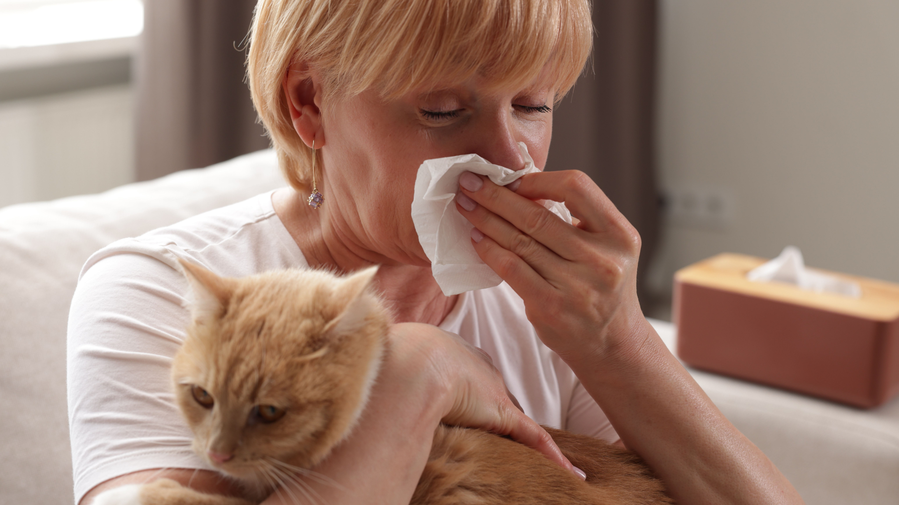
If you're allergic to cats but refuse to give yours up, you already know the drill. Antihistamines, air purifiers, constant sneezing, and still waking up congested. Many cat owners say they hit a breaking point before realizing something important: Relief didn't come from one miracle fix. It came from small, cheap habits done consistently. Here are 11 low-cost changes cat owners with allergies say actually helped — starting with products you can use right away.
1. Pacagen Cat Allergen Neutralizing Spray
Many people said this was the first thing that gave them noticeable, immediate relief. Instead of simply masking odors, the spray neutralizes cat allergens on surfaces like couches, bedding, carpets, and common cat hangout areas. It's easy to use and only needs to be applied twice a week, whether after cleaning or as a quick reset between cleanings. Recommended by vets and allergists, it costs about $1.66 a day—less than a cup of coffee.
👉 Pacagen Cat Allergen Neutralizing Spray
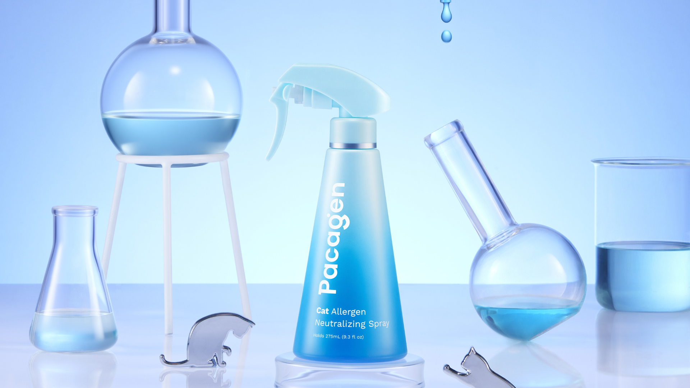
2. Scotch-Brite Lint Roller
Lint rollers are not just for clothing. Many cat owners use them on couch arms, cat trees, bed corners, and chair backs where fur tends to collect. This simple habit takes less than a minute and quickly removes surface hair, helping reduce the amount of allergen carrying fur on high touch fabrics.
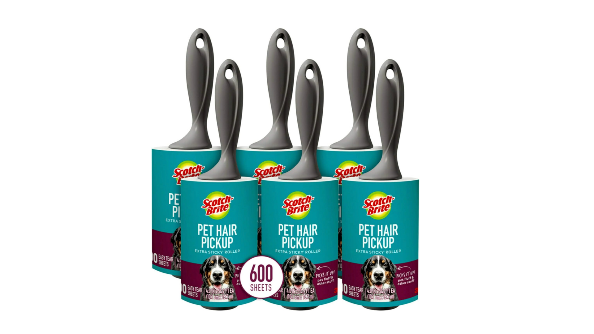
3. O-Cedar EasyWring Microfiber Spin Mop
Dry sweeping spreads allergens into the air. Switching to a damp microfiber mop traps allergens instead of redistributing them. People noticed the biggest difference in small apartments and bedrooms.
👉 O-Cedar EasyWring Microfiber Spin Mop
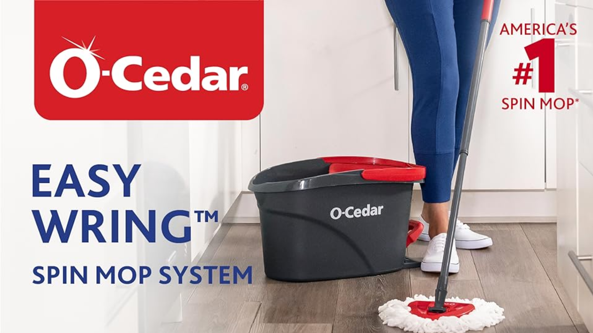
4. Pacagen Cat Allergen Reducing Supplement
Many cat owners found that cleaning alone wasn't enough, since cat allergens are constantly produced in saliva during grooming. A cat allergen reducing supplement helps reduce allergens at the source by lowering levels in the cat's saliva over time. The formula includes clinically studied ingredients that support immune and gut health. It comes in chicken and salmon flavors, making it easy to give daily since most cats enjoy the taste.
👉 Pacagen Cat Allergen Reducing Supplement
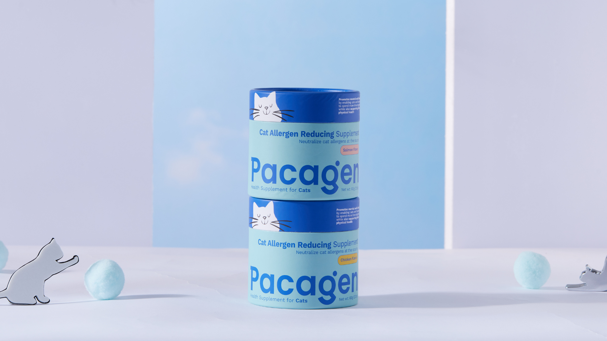
5. Amazon Basics Microfiber Cleaning Cloths
Dry dusting pushes allergens around. Microfiber cloths used slightly damp grab and hold allergens instead. Many people keep a stack handy for daily wipe-downs of tables, shelves, and window sills.
👉 Amazon Basics Microfiber Cleaning Cloths
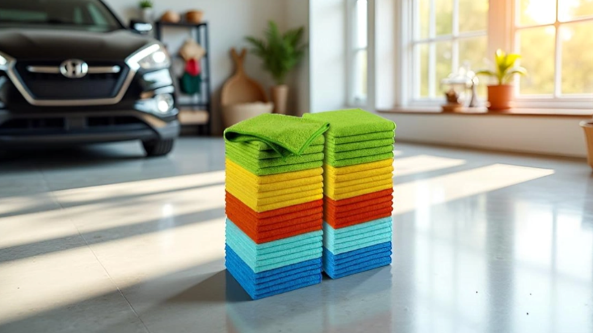
6. Earth Rated Hypoallergenic Pet Wipes
👉Earth Rated Hypoallergenic Pet Wipes
Bathing cats on a regular basis is often unrealistic. Instead, many owners opt to gently wipe their cats with unscented pet wipes to remove saliva residue and loose dander. This approach is quick, low stress for the cat, and can be effective at reducing allergen spread.
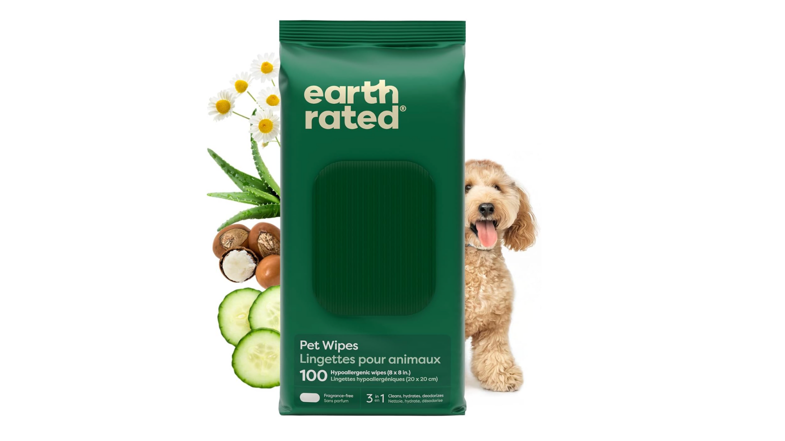
7. Bissell Pet Hair Eraser Handheld Vacuum
You don't need to vacuum the whole house every day. Spot-vacuuming couches, chairs and cat beds helped reduce allergen buildup in high-contact areas.
👉 Bissell Pet Hair Eraser Handheld Vacuum
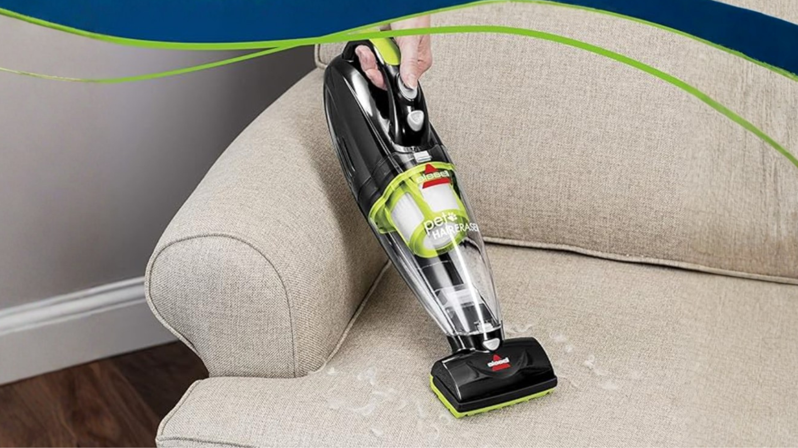
8. LEVOIT HEPA Air Purifier Filter Replacements
Many people already own air purifiers but do not maintain them consistently. Changing or cleaning filters more frequently than recommended can make a noticeable difference in breathing comfort.
👉 LEVOIT HEPA Air Purifier Filter Replacements
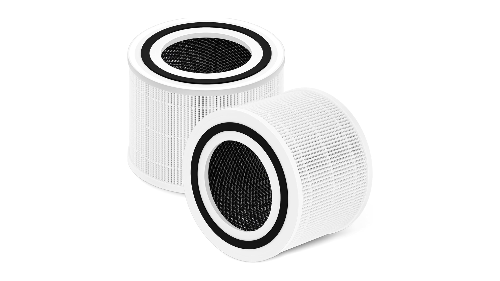
9. Bedsure Washable Throw Blanket (Pet-Friendly)
Washable throws placed on couches and beds act as allergen shields. People simply washed the blanket weekly instead of trying to deep-clean furniture constantly.
👉 Bedsure Washable Throw Blanket
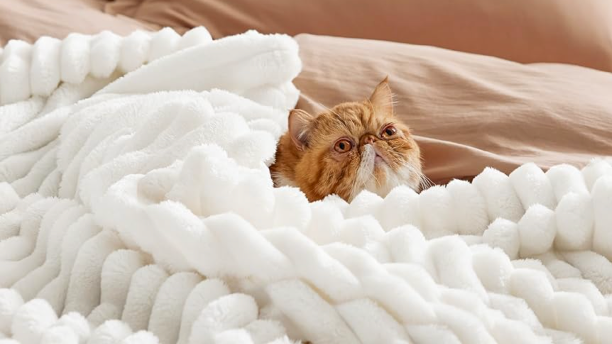
10. SimpleHouseware Over-Door Hanging Organizer
A surprising habit that helped: Changing clothes after sitting on shared furniture. Having a designated place to store "cat clothes" reduced allergen transfer to beds and clean spaces.
👉 SimpleHouseware Over-Door Hanging Organizer
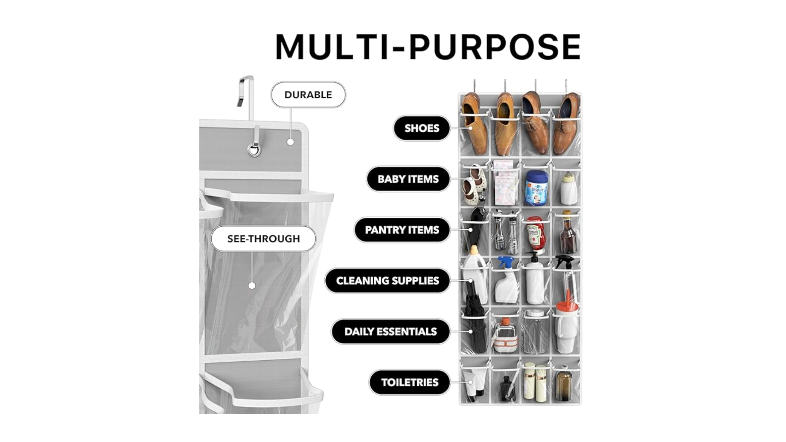
11. Reusable Microfiber Laundry Bags
Washing pet blankets and covers in separate laundry bags helped keep allergens from spreading to other clothes during wash cycles. Cheap, simple, and easy to keep consistent.
👉 Reusable Microfiber Laundry Bags
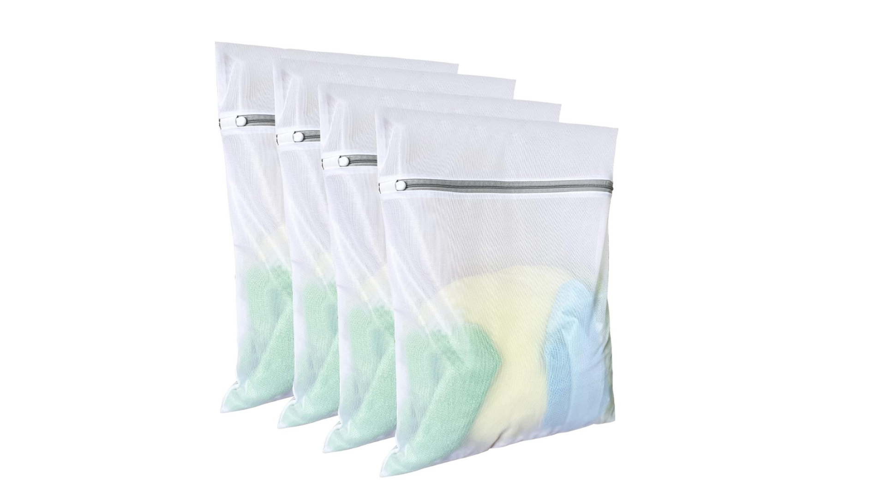
Final Thoughts
Among the solutions mentioned, Pacagen Cat Allergen Neutralizing Spray stands out for its simplicity and ease of use. Rather than requiring a full change in routine, it can be applied directly to high-contact areas where cats spend the most time, such as favorite lounging spots, bedding, and furniture. Many users report noticing results within two days, making it one of the faster and more practical options for reducing allergens in shared living spaces. For cat owners looking for a low-effort, targeted approach, focusing on key areas of the home can make a meaningful difference.